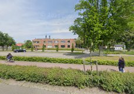
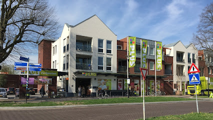

wat heb ik geleerd?
Ik heb veel geleerd over het vak software developer
het afgelopen jaar en ik heb dus ook een gedeelte van
HTML, CSS en JS geleerd. Alle code en vaardigheden
die ik in het vak realiseren heb geleerd gebruik ik
hier om te kijken hoe ver ik nu precies ben met leren
en wat de verbeter puntjes op dit moment zijn.
Voor dat ik op deze opleiding kwam zat ik op
de Korenear. Hieronder een afbeelding van de school:

en ik werk bij Plus verbeeten
Overloon. hieronder een afbeelding van het bedrijf:

wat ga ik dit jaar nog leren?
De rest van het schooljaar ga ik nog erg veel leren.
Ik weet nog niet precies wat, maar ik weet wel
dat we met databases en GitHub gaan werken.
Ik heb ook gehoord dat we met de codetalen
PHP en SQL gaan werken.